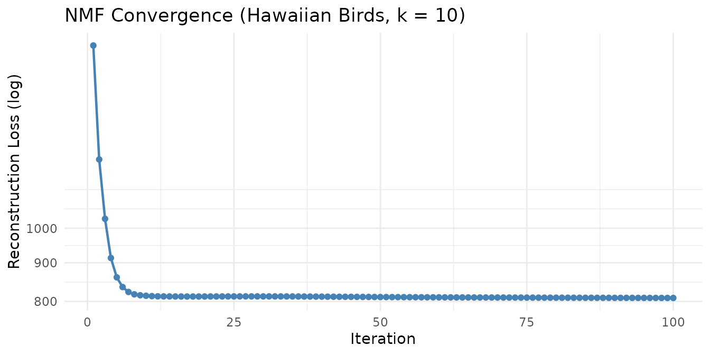
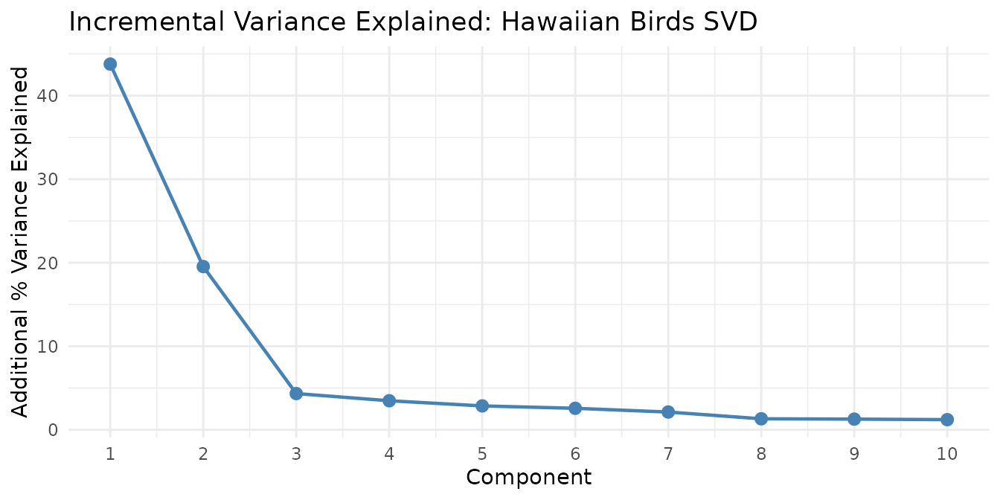
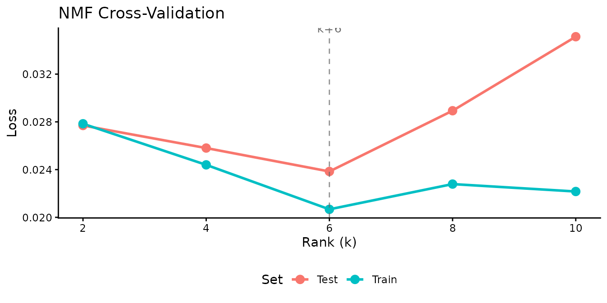

What Is RcppML?
RcppML decomposes a nonnegative matrix into low-rank factors , where captures features, captures sample loadings, and gives per-factor scale.
Built on Rcpp and Eigen with OpenMP parallelism and optional CUDA GPU support, RcppML is designed for large sparse matrices common in genomics, recommender systems, and image analysis. Key capabilities include:
- NMF with coordinate-descent and Cholesky NNLS solvers
- SVD / PCA with optional non-negativity and L1 constraints
- Cross-validation via speckled holdout for automatic rank selection
- Distribution-aware losses: Gaussian, Poisson, Generalized Poisson, Negative Binomial, Gamma, Inverse Gaussian, Tweedie — plus zero-inflation
- Regularization: L1, L2, L21, angular, graph Laplacian, upper bounds
-
Consensus clustering and divisive clustering
(
dclust) -
Composable factorization graphs via
factor_net() -
StreamPress
.spzformat for out-of-core computation - GPU acceleration via CUDA
Installation
Install from CRAN:
install.packages("RcppML")Or install the development version:
remotes::install_github("zdebruine/RcppML")For GPU support, see the GPU Acceleration vignette.
Quick NMF Demo
Factor the Hawaiian birds species-count matrix (183 species × 1,183 grid cells) into 10 components:
| Rows | Columns | Rank | Reconstruction MSE | Iterations | Runtime (sec) |
|---|---|---|---|---|---|
| 183 | 1183 | 10 | 3.73e-03 | 100 | 0.28 |
Each of the 10 factors captures a distinct pattern of bird species co-occurrence across Hawaiian survey sites.

Quick SVD Demo
We can also decompose the same data with SVD, which captures directions of maximum variance rather than additive nonneg parts:

The first component captures the dominant species-composition gradient, and each subsequent component adds progressively less explanatory power — the hallmark of effective dimensionality reduction.
For PCA (centered and optionally scaled SVD), use the
pca() convenience wrapper:
pc <- pca(hawaiibirds, k = 5, seed = 42) # center = TRUE by default
# Equivalent to: svd(hawaiibirds, k = 5, center = TRUE)PCA centers the data before decomposition, so the first component
captures the dominant direction of variation rather than the overall
mean level. Use scale = TRUE for data where features have
different units or widely varying magnitude.
Quick Cross-Validation Demo
Use speckled holdout cross-validation to find the best rank for the AML data:

Training loss always decreases with rank, but test loss reveals where the model begins to overfit. The test-loss minimum identifies the optimal number of factors.
Built-in Datasets
RcppML ships seven datasets spanning diverse domains:
| Dataset | Dimensions | Type | Domain |
|---|---|---|---|
aml |
824 × 135 | Dense matrix | DNA methylation (AML) |
golub |
38 × 5,000 | Sparse (dgCMatrix) | Gene expression (leukemia) |
hawaiibirds |
183 × 1,183 | Sparse (dgCMatrix) | Bird species counts |
movielens |
3,867 × 610 | Sparse (dgCMatrix) | Movie ratings |
olivetti |
400 × 4,096 | Sparse (dgCMatrix) | Face images (Olivetti) |
digits |
1,797 × 64 | Sparse (dgCMatrix) | Handwritten digit images |
pbmc3k |
13,714 × 2,638 | SPZ raw bytes | Single-cell RNA-seq (PBMCs) |
The pbmc3k dataset is stored as StreamPress-compressed
raw bytes containing the full 13,714 genes × 2,638
cells from the 10x Genomics PBMC 3k dataset, with 9
Seurat-annotated cell types embedded as column metadata. Decompress it
with st_read() and access annotations via
st_read_var() — see the StreamPress vignette.
Where to Go Next
Core Techniques
- NMF Fundamentals — Solvers, diagonal scaling, convergence, and basic workflow
- SVD and PCA — Truncated SVD, PCA, non-negative and sparse variants
- Cross-Validation — Speckled holdout for automatic rank selection
- Statistical Distributions — Distribution-aware losses and zero-inflation handling
- Regularization and Constraints — L1, L2, L21, angular penalties, and upper bounds
Advanced Methods
- Clustering, Consensus, and Classification — Divisive clustering, consensus NMF, and sample classification
-
Factorization Graphs — Multi-modal
and guided factorization via
factor_net()
Infrastructure
- StreamPress — High-performance sparse matrix compression and out-of-core NMF
- GPU Acceleration — CUDA-based GPU support for large-scale factorization